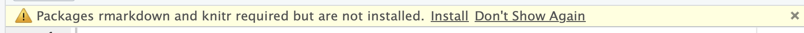
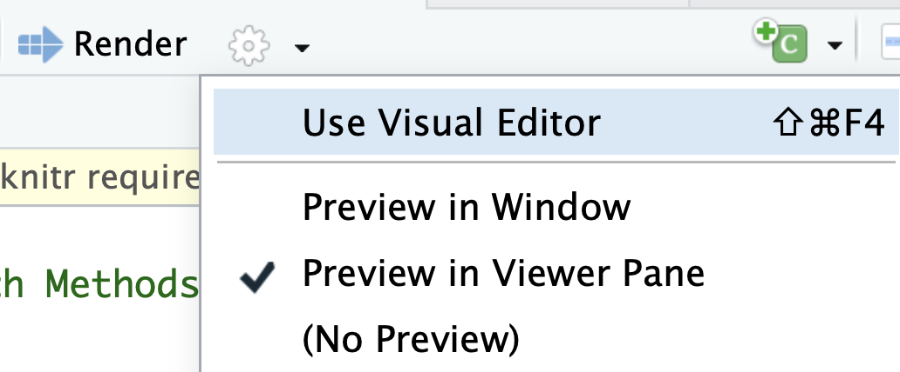

Week 5 : Stats Review.
Click arrow to advance slides.
Part 1 : Check-In Review
Reading an Article
- Okay, how you feeling about this one.
- Ways to translate the title?
- Methods of making this make sense?
Validity and Reliability in Dead Fish
Validity : Are we measuring the TRUTH?
Validity and Reliability in Dead Fish
Reliability : Are we getting repeatable measures?
Part 2 : Data Analysis in R
Getting Started in Six Easy Steps.
Take a deep breath.
Download the R Activity Document (under Useful Links) to your computer.
Upload this to posit.cloud, and open it in posit.cloud by clicking on the file (it is a fancy R Script).
Click “Install” if you see the message below.

Click the Gear next to Render, select Preview in Viewer, then click Render.

Check in on your buddy. How are they doing? How are you doing?
The Dataset
codebookurl <- "https://www.dropbox.com/scl/fi/m4os7p2jualfzzuyqbnqy/CODEBOOK_ReadingData.csv?rlkey=wteyc27f8vgo6ihe05hijnkln&dl=1"
dataurl <- "https://www.dropbox.com/scl/fi/47gw0h2x6abprskwdqgo7/DATASET_ReadingData.csv?rlkey=4mm3itw9p4fm7ee5qa7z3n82q&dl=1"
d <- read.csv(dataurl, stringsAsFactors = T)
codebook <- read.csv(codebookurl)
knitr::kable(codebook)
| like |
I like reading for fun |
| school |
I like reading for school |
| startend |
I always read from the beginning to the end |
| understand |
I almost always understand everything that I read |
| feelstupid |
I feel bad or stupid if I don t understand everything I read |
| amgood |
I think I am a very good reader |
| kid |
I read a lot as a kid |
| EXPtextbook |
I have a lot of experience reading textbooks |
| EXPscience |
I have a lot of experience reading scientific articles |
| hardsummary |
I have trouble summarizing what I have read when a teacher asks |
| wishbetter |
I wish I was a better reader |
Graphing a Variable in R
What do you observe about the graph below?
barplot(table(d$like),
col = "black", bor = "white",
xlab = "I Like Reading for Fun",
ylab = "Frequency")
Learning from a Variable with Human and Statistics Brain
What do you observe about the graph below, in terms of the following statisitcs???
statz <- t(psych::describe(d$like)[,c(2:5, 8)])
colnames(statz) <- ""
statz
n 37.000000
mean 3.864865
sd 1.158595
median 4.000000
min 1.000000
barplot(table(d$like),
col = "black", bor = "white",
xlab = "I Like Reading for Fun",
ylab = "Frequency")
ACTIVITY : Learn About People with R and Human Brain
NEXT WEEK : Observations
I’m being observed! Great if we can all show up on time :)
Read about observational data.
Read a specific coding scheme researchers use to
BYE.